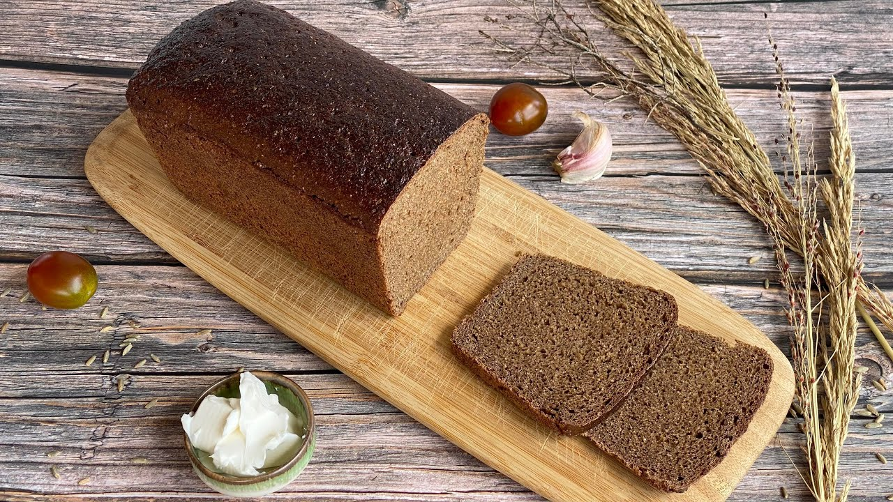
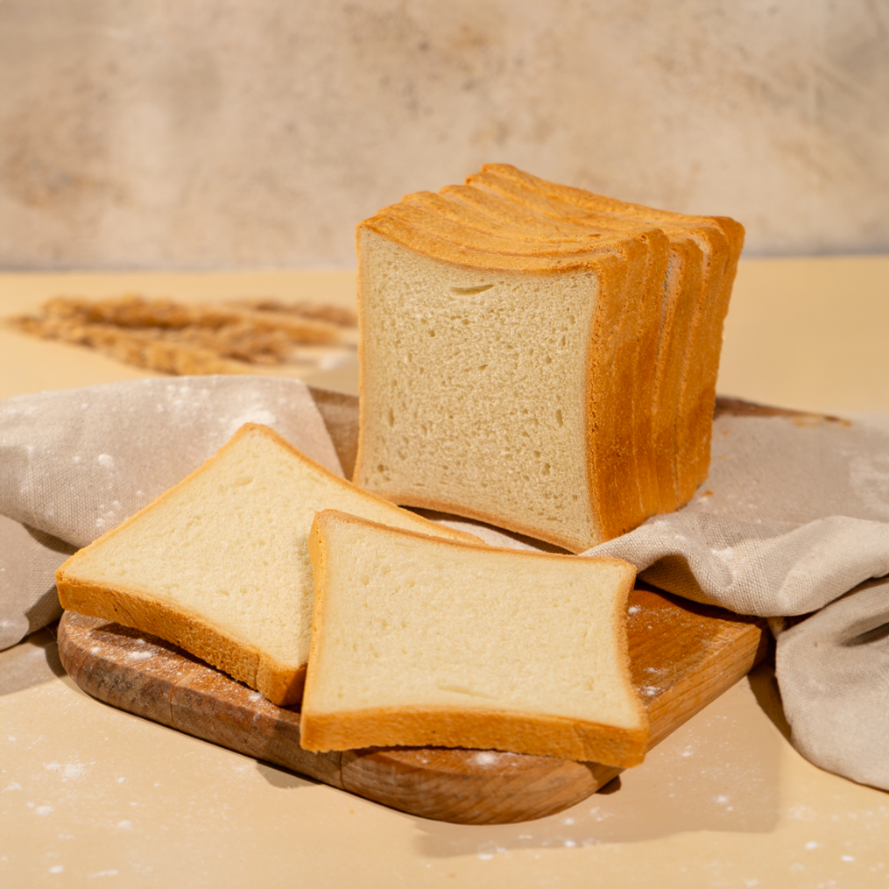
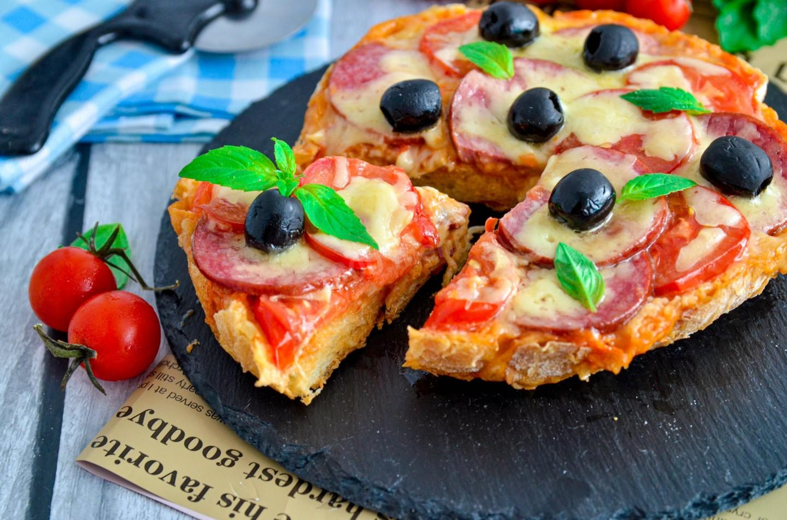
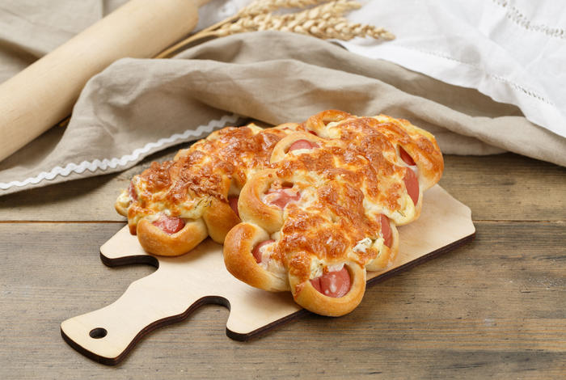
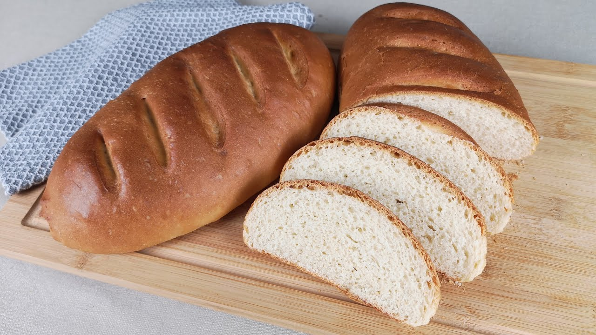
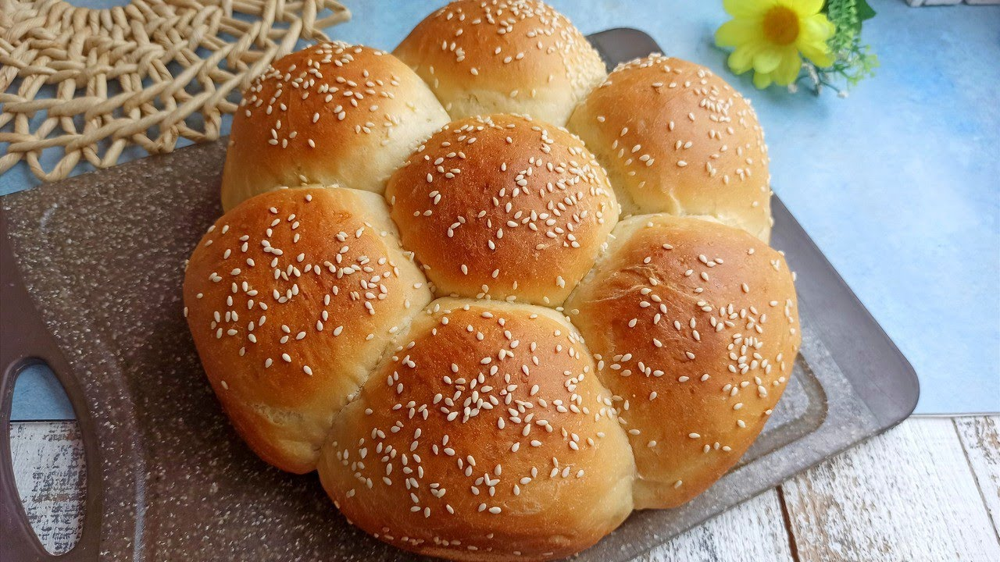
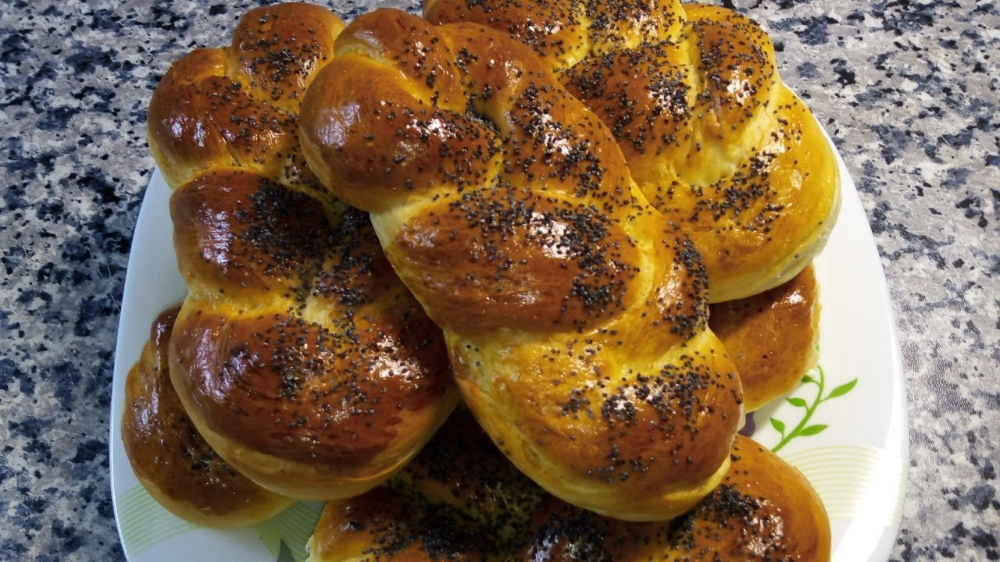
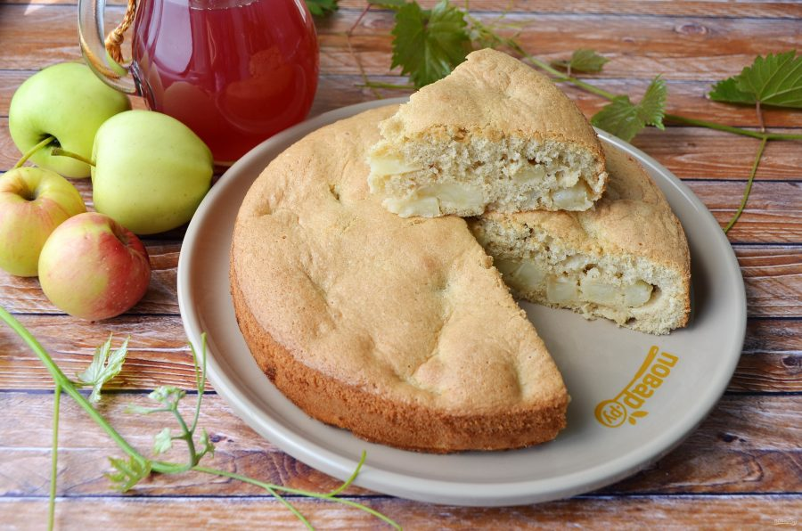

Хлеб — всему голова! Без хлеба нет обеда. Только вдумайтесь, простая буханка хлеба содержит в себе витамины группы В, Е, Н, РР
Его вкус и аромат — лучшие доказательства превосходного подхода к процессу выпечки хлеба нашими пекарями.

Пшенично-ржаной хлеб с осолодованными пророщенными зернами ржи, которые придают особую ценнос.

Тостовый хлеб приготовлен по особой технологии и имеет нежный эластичный мякиш

В разных культурах существуют свои варианты этого блюда, но итальянская пицца стала одной из самых популярных в мире, которую полюбили во всем мире.

Так называют булочки с сосиской и сыром, которые формируют в виде гусеницы. Это вариант сосиски в тесте.

Выпечное изделие из дрожжевого теста с сосиской внутри. Подходит для перекуса завтрака или даже как дополнение к основному блюду.
Закуску можно подавать как в горячем, так и в остывшем виде, самостоятельно или как дополнение к основным блюдам.

Распространённый вид булочных изделий, характерная вытянутая форма.

Говорят, что булочка Ромашка в советские времена иногда служила заменой традиционному пасхальному куличу

Классическая плетенка с маком – традиционное сдобное изделие с большим количеством сочной маковой начинки.

Сладкий десерт из яблок, запечённых в тесте, вариант яблочного пирога.